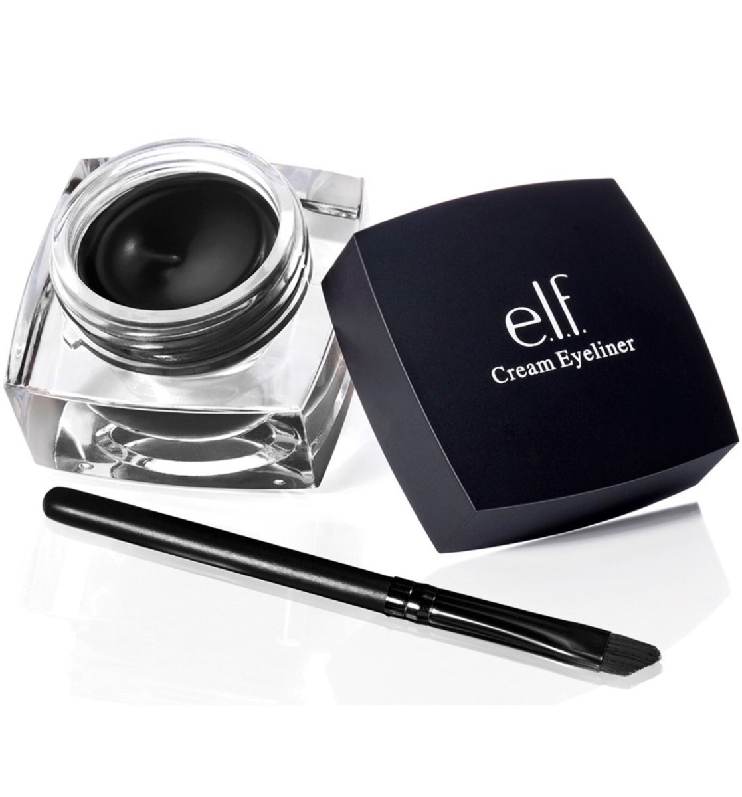

Delineadores en Gel

Los delineadores en gel tienen un formato de pequeño frasco, acompañados por una brocha que se debe emplear para su aplicación.
En cuanto a utilización, resultan algo parecidos a los delineadores líquidos de pincel, pero van a tener pequeñas diferencias.
Este producto es más sencillo de utilizar que el delineador líquido, pero no tan sencillo como resulta utilizar un delineador de lápiz.
Lo cierto es que requieren de buen pulso y de algo de experiencia para su aplicación, pero en caso de error su eliminación resulta mucho
más sencilla que en el caso de los líquidos, pero ojo: esto será así siempre y cuando el producto no se haya secado, lo que quiere decir que en
caso de error hay que retirarlo de manera inmediata.
Existen diferentes tipos de brocha para la aplicación de este producto, algo que supondrá diferentes acabados o efectos, como una línea más fina o
más gruesa. Conocer qué tipo de brocha contiene el producto que vamos a adquirir va a ser un punto importante.
A la hora de aplicarlo, basta con coger solo un poco de producto sin ser necesario sumergir completamente la brocha en él.
El párpado superior será el primero sobre el que se aplicará el delineador. Una vez colocado se puede volver a repasar la línea para aumentar su
intensidad.
También puede resultar conveniente aplicar, antes de nada, una pre-base de maquillaje sobre los párpados para así mejorar la fijación de delineador.